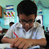
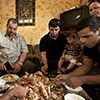
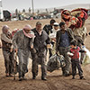
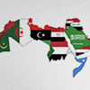
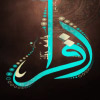

Diplomats B1/1+
Back
كتاب مستوى
B1/1+
العربــية الدبلوماسية
Arabic for Diplomats
الوحدة الأولى: الدبلوماسية والمجتمع المحلي
الوحدة الثانية: الرياضة
الوحدة الثالثة: التـربـيــة والتعليــم
الوحدة الرابعة: الفنّ السّابع
الوحدة الخامسة: الحكومات والنظم السياسية
الوحدة السادسة: السّياحة والتّسلية
الوحدة السابعة: الطّفل والأسرة
الوحدة الثامنة: المجتمع العربي
الوحدة التاسعة: اللاجئون
الوحدة العاشرة: دول عربية
الوحدة الحادية عشرة: الثقافة والأدب
الوحدة الثانية عشرة: شخصيات وأفكار
كتاب مستوى
B1/1+
العربــية الدبلوماسية
Arabic for Diplomats
فريق التأليف
د. خالد حسين أبو عمشة
إبراهيم الخطيب
فادي علي شطناوي
د. ساجدة أبو سيف
بتول دعسان
شاهد كل المحتوى الكتاب هنا
(أثّر - يؤثّر | التأثير (في ، على
to influence
(أثَّرَ– يُؤَثِّر/التأثير(في/على) – تأثر – يتأثر / التأثر (بـ
to influence
(أجبر – يجبر / الإجبار (على
to force
(أدّى – يؤدّي (إلى
To lead to
(أسرف – يسرف / الإسراف(في
wasting (food / money )
(أُصيب (بــ
To be injured
(أعرب - يعرب | الإعراب (عن
to express
(أقدم – يقدم / الإقدام (على
to undertake
(أكَّد – يؤكّد / التأكيد (على
confirmed
(إطلاق النار (على
To shoot
(اتَّسع – يتسِع / الاتساع (لـ
to accommodate to, to expand to
(احتجّ – يحتجّ/ الاحتجاج (على
To protest
(ارْتاب – يَرْتاب/الارتياب (من
To be suspicious
(ارتبط - يرتبط | الارتباط (بـ
to be related to
(استاء – يستاء /استياء (من
Resentment
(اسْتَاء – يَسْتَاء/ الاسْتياء (مِن
to be displeased
(استند – يستند / الاستناد (على/ إلى
to be based on
(استولى – يستولي/ الاستيلاء (على
to take over
(اعتمد– يَعْتَمد/ الإعتِماد (على
to rely on/ relying
(افتقد – يفتقد / الافتقاد (إلى
to lack
(التزم – يلتزم / الالتزام (بـ
to adhere to
(انتسب – ينتسب / الانتساب (إلى
to belong to a family
(انتظم - ينتظم | الانتظام (في
to be regulated (do regularly)
(اندمج – يندمج / اندماج ( في
to incorporate, to integrate
(تبرَّع – يتبرع/ التبرُّع (بـ
To donate
(تخلّى – يتخلى / التخلّي (عن
to abandon
(تمثّل – يتمثل / التمثل (في
represented in
(حذّر – يحذّر/ التحذير (من
To warn
(عانى – يعاني/ المعاناة (من
To suffer
آذى – يؤذي / الإيذاء
to do harm
آلية (ج) آليات
technique/ method
آمِن
Safe
آمِن (ج) آمنون
Safe
أبدى – يُبدي
to show
أبلغ – يبلغ/ الإبلاغ
To inform
أبوية
fatherhood
أتاح - يتيح | الإتاحة
to provide with ; supply with ; afford
أثاث
furniture
أثَّر – يؤثر / التأثير (في/ على)
to influence
أثريّ
archaeological
أجرى - يُجري | الإجراء
to run/ hold (an event)
أجرى – يجري / إجراء
to run (something)
أجّل - يأجّل | التأجيل
to postpone
أجلى – يُجلي / الإجلاء
to evacuate
أحبط
thwarted/prevented
أحيى – يحيي/ الإحياء
To revive
أخذ على عاتقه
to undertake
أخلى- يخلي - الإخلاء
to vacate
أدار – يدير / إدارة مدير
to manage
أدخل – يدخل / إدخال
to embody, to enter
أدّى – يؤدي / التأدية (الأداء)
to contribute
أدّى – يؤدي / تأدية
to perform
أدّى مهمّة
to perform a task
أراد- يريد / الإرادة
to want (will as a noun)
أرملة (ج) أرامل
Widow
أزمة (ج) أزمات
Crises
أساس (ج) أُسس
basis/ foundation
أساسيّ (ج) أساسيّات
basic/ primary
أسرة النواة
nuclear family
أسقط – يسقط / إسقاط
to overthrow
أسلوب (ج) أساليب
style
أسهمَ – يسهِم/ الإسهام (بـ )
to contribute/ contribution
أشار – يشير / الإشارة (إلى) ←مشير
to refer to
أشوف = أرى
To see
أصاب – يصيب / إصابة
to hit, to infect
أَصابَ- يُصِيب/الإصابة
to injury
أصدر – يصدر / الإصدار
to issue
أصدر – يصدر / الإصدار
to issue
أصعدة
levels
أصلح – يُصلِح / الإصلاح( للمحسوس والمجرد)
to reform
أضاع
To miss (a chance)/ to lose
أطاع – يطيع / إطاعة طاعة
to obey
أطلق النار
shot
أعاد – يعيد / إعادة
re-do
أعدّ – يعدّ/ الإعداد
to prepare
أعطى – يعطي / إعطاء
given
أعلن – يعلن / إعلان
to announce
أغلق – يُغْلق/ الإغلاق
To close
أقصى
utmost
أقصى
utmost
أقلية (ج) أقليات
Minority
أكّد – يؤكّد/ التأكيد (على)
to emphasize, concentrate on
أكرم – يكرم / إكرام←كريم (ج) كُرماء
to honor, to be generous
ألزم – يلزم / إلزام ←إلزامي
to compel to
ألقى القبض (على)
to arrest
أمر – يأمر / الأمر
to order
أمْر(ج) أمور
matters
أمْر(ج) أوامر
orders / commands
أنتج – ينتج / إنتاج
to produce
أنثى(ج) إناث
Female
أنجب – يُنجِب / الإنجاب
to give birth to
أنجز – ينجز/إنجاز
To achieve
أنشأ – ينشئ / إنشاء
to establish
أنفق – ينفق / الإنفاق
to spend (money)
أنقذ – ينقذ/ الإنقاذ
To save
أهان – يهين / الإهانة
to insult, to humiliate
أهّل – يؤهل / تأهيل ←مُؤهَّل
to qualify, to entitle
أهل الحل والعقد
Decision makers
أيّد - يؤيّد | التأييد
to support/ to agree with
إجراء (ج) إجراءات
Procedure / action
إزاء
With regard to
إسكات
to prevent someone from speaking freely
إشادات
tributes
إعلان (ج) إعلانات
announcement
إنجاز (ج) إنجازات
achieve/accomplish
إنماء
Development
إيجابيات
Advantages
إيجاز
Briefly
اتبع – يتبع / اتباع
to follow
اتّخذ – يتّخذ / الاتّخاذ
to take
اتّسع – يتّسع/ الاتساع (لـ )
to extend, wide (n)
اتهم- يتهم / اتهام (بـ )/ تُهمة ←مُتَّهم
to accuse
اجراءات
procedure
احتضن – يحتضن / الاحتضان
to adopt (according to Islamic law)
احتكّ – يحتكّ/ الاحتكاك (بـ )
to deal with, to interact
احصائيات
statistics
اختار – يختار / اختيار ←مختار
To choose
اختفى – يختفي / اختفاء
disappeared
اِرْتاب- يَرْتاب /ارتياب←مُرْتاب
be suspicious (of)
ارتبط – يرتبط / الارتباط (بـ )، والشيء مرتبط بـ
to be connected to
ارتكب – يرتكب / الارتكاب
to commit (negative)
ارتكز – يرتكز/ الارتكاز(حول)
to be based on
ازدان - يزدان
to decorate
استبد – يستبد / استبداد \مُستبِد
to tyrannize
استبعد – يستبعد/ الاستبعاد
to exclude
استثمر – يستثمر/ الاستثمار←مستثمر
to invest / investment
استثمر- يستثمر / الاستثمار
to invest
استجاب – يستجيب/ الاستجابة
To response
استحق – يستحق / استحقاق
to deserve
استدعى – يستدعى/ الاستدعاء
To recall
استرخاء
Relaxing
استشار – يستشير / استشارة مستشار الشورى
to consult
استضاف – يستضيف / استضافة مستضيف
to host
استضاف – يستضيف / الاستضافة
to host
استطلاع
poll
استعدّ – يستعد/ الاستعداد (لـ )
to get ready for
استغرق - يستغرق | الاستغراق
to take/to last (time)
استغلت
To exploit/ To take advantage
استقر – يستقر/ استقرار ← مستقر
settles down
استقطب – يستقطب/ الاستقطاب
to attract (someone or something)
استقلّ – يستقل / استقلال ←مستقل
to become independent
استقلّ – يستقلّ / الاستقلال ←مستقِل
to be independent/ independence
استمرّ- يستمرّ / استمرار (استمرارية)
To continue
استهدف – يستهدف/ الاستهداف
To target
استهوى – يستهوي
to attract
اشتهر – يشتهر / الاشتهار (بـ)
to be known by
اصطفوا
lined up
اضطهد – يضطهد / اضطهاد مضطَّهَد
to oppress
اعتبر – يعتبر / اعتبار
to consider
اعتبر – يعتبر / الاعتبار
to consider
اعتذر – يعتذر / اعتذار ←مُعتذِر
to apologize
اعتزم – يعتزم
to intend
اعتمد-يعتمد - الاعتماد
to adopt
اقترح – يقترح / اقتراح ←مُقتَرَح
to suggest
اكتأب – يكتئب / الاكتئاب
depression
اكتساب
Acquiring / Gain
الأبد
Ever
الأجواء
atmosphere
الأصالة
originality
الأغلبية # الأقلية
majority#minority
الأفق
Horizon / in sight
الأمانة
trust
الأمر الواقع
de facto, reality
الأمراض المزمنة
Chronic disease
الأمّية←أميّ
ignorance ; illiteracy
الإقامة : أقام – يقيم مقيم
Residence
الإهانة
insult
الابتكاري
innovative
الاتجار
trafficking
الاحتكاك
in direct contact with
الاحتماء : احتمى – يحتمي (بـ ) حمى – يحمي / حماية
seeking cover; shelter
الاستجابة
Response
الاستسلام
surrender
الاستعمار
Colonialism
الاستغلال
to make use of or take advantage of
الاستهلاك
Consuming
الافتتاح
opening
الانفصال
separation ; split
البادية
desert (where Bedouins live)
البادية (ج) البوادي
Desert
البطالة
Unemployment
التاج
crown
التجارة البينية
Two-way trade
التربوية
educational
الترغيب
To urge
الترهيب
Frightening /Intimidation
التسوُّق
shopping
التشريعية
legislative
التصديق على
to ratify
التضامن
Solidarity
التعايش
Coexist
التقرير (ج) التقارير
reports
التمييز العنصري
racial discrimination
التّنبيه
warning
التّنحي
step down
التنفيذية
executive
التنمية
development
التهريب
smuggling
التوافد
to come in groups
الثقة
Trust
الجاني (ج) الجناة
criminal
الجسيم (ج) الجِسام
serious (injury) - negative
الجلاد
Hangman
الجنس (ج) الأجناس
Gender(s)
الجودة
state or quality of being efficient
الجوع
Hunger
الحاجة(ج) الحاجات احتاج – يحتاج / احتياج (إلى)
the need
الحدّ من
decrease/ limit
الحداثة
modernity
الحسنة (ج) الحسنات
goodness
الحشد
to gather
الحصار
Siege
الخير≠الشر
good≠ evil
الدائم (ج) الدائمون
Permanent
الدفء
Warmth
الذهب
gold
الرخام
marble
الريف
countryside
السَّحاب
cloud
السكري
diabetes
السُّمنة = البدانة
obesity
الشائكة
Difficult / Thorny
الشاملة
Comprehensive
الشتات
diaspora
الشرف
Honor
الشعب (ج) الشعوب
nation/ people
الشيوعية
Communism
الصحّة
health
الصدارة
first rank/ place
الصدق
honesty
الصعود # الهبوط
going up# down
الصلاح
goodliness
الصواب≠الخطأ
Right ≠ wrong
الضيف (ج) الضيوف
Guest(s)
الطائفية
sectarianism
الطارئ (ج) الطوارئ
emergency/emergencies
الطفولة
Childhood
العبودية
Slavery
العثور
Finding
العديد من
many of
العصر الحديث
Recent epoch / era
العضو (ج) الأعضاء
Members
العُقد النفسية
mental disorder
العمالة
Employment
العمالة
Labour
العملات
Currencies
العُنف← عنيف
violence
الفئة العمرية (ج) الفئات العمرية
age-group
الفراغ الدستوري
constitutional void
الفِضّة
silver
الفقر المدقع
Extreme poverty
القاحلة
arid
القاسم المشترك
common divisor
القِبلة
destination ; goal ; target
القرض (ج) القروض
Loan
القضائية
Judicial
الكفاية
adequacy
اللجوء : لجأ – يلجأ لاجئ (ج) لاجئون
Resorting to (refugee )
المادة
curriculum
المادة القانونية(ج) المواد القانونية
article (law)
المادية ≠ المعنوية
materialist# immaterial
المتسولين
beggars
المتطوعين
Volunteers
المتنازَع عليها
Disputed
المجني عليه (ج) المجني عليهم
victim
المحاصيل
agricultural crop
المحرومون
Deprived
المُخرَج (ج) المُخرَجات
Outcome(s)
المُدرَّج (ج) ات
amphitheater
المدنيّ (ج) المدنيون
Civilians
المركز
place
المُسلَّح (ج) المُسلَّحون
Armed (adj)
المشهد
Scene
المصْلحة (ج) المصالح
interest
المطلق
absolute
المعاقين
Disabled / special needs
المعونات
aids
المناسِب
appropriate
المناوشات
Skirmishes
الناتج المحلي
Gross Domestic Product (GDP)
الناطقة
movietone
النزاع
struggle
النظام الأساسي
basic law
النظريّ
theoretical
النكبة
the Arab- Israeli war in 1948
النكبة
catastrophe/ the Arab Israeli war in 1948
الهاجس
obsession
اليابسة
land
امتاز – يمتاز / امتياز
to be distinguished by
امتدّ – يمتدّ / الامتداد
to extend
امتدّ – يمتدّ/ الامتداد
to extend
امتياز (ج) امتيازات
privilege
امتياز(ج)امتيازات
privilege/privileges
انتحاري
suicidal
انتخب – ينتخب / انتخاب = اقترع – يقترع / اقتراع
cast a vote/ to elect
انتصار(ج) انتصارات
victory/victories
انتمى –ينتمي / انتماء
to be loyal to, to belong to
انتهك – ينتهك / الانتهاك
to transgress, to violate
انتهك – ينتهك / انتهاك
to violate
انخراط
involvement
انخفض – ينخفض/ الانخفاض
to be decreased
اندحار
Defeat
اندماج
integration
انطبع – ينطبع / انطباع
to take an impression
انطلاقة (ج) انطلاقات
lunching
انعدم – ينعدم/ الانعدام
the lack of
انفتاح
openness - the state of being open-minded
انفجر – ينفجر / انفجار
To explode
انقسم – ينقسم / انقسام
to be divided
اهتمام/ات
interest
بأسرها
Entire / overall
بؤس
Misery
بِئر (ج) آبار
well
بات – يبيت / البيات
to spend the night
بادر – يبادر/ المبادرة
to initiate/ initiation
بارعين
skilled
باستثناء
Except for/ Excluding
باطل
wrong ; with an incorrect result
بالإجماع
unanimously
بالتحديد
specifically
بالذات
particularly
بالغ
extreme
بالغ الأهمية
Very important
بايع – يبايع / مبايعة
to pledge allegiance to
بجدية
seriously
بجوار= بجانب
beside
بحث – يبحث / البحث ( عن / في )
to look for
بُحَيرة/ات
lake
بدقة
accurately
بديهي (ج) بَدهيَّات
obvious
بذل – يبذل / البذل
to spend (effort)
بذل جهد
to exert/put in one's effort
بُرْج (ج) أبراج
tower
بشع ←أبشع
hideous or ugly
بشكل محدود
Limited
بصرها
eyesight
بصمة (ج) بصمات
Impression /Fingerprint
بطولة (ج) بطولات
championship
بُعد (ج) أبعاد
dimensions
بُعد (ج) أبعاد
Dimension
بُعد (ج) أبعاد
dimension
بعضـ (ضمير) + البعض
each other
بغض النظر
Regardless of
بغض النظر
regardless of
بلدية (ج) بلديات
municipality
بلَغ – يبلُغ / البلوغ
To reach
بلغ – يبلُغ/ البلوغ
to reach
بموجب
according to
بنية
structure
بوابة (ج) ات
gate
بيت الشعر (ج) بيوت الشعر
The tents are made by goat and sheep hair
تأهّل - يتأهّل | التأهّل (إلى ، لـ )
to be qualified for
تابع
belonging to
تبادل – يتبادل / التبادل
to exchange
تباين
divergence
تبرع
donate
تبقّى – يتبقّى
to remain
تبنَّى – يتبنّى / التبنّي← المتبنّى
to adopt
تبوء بالفشل
continue to fail
تتخلى
abandon
تتقلص
To become less
تثمر
to benefit/ to bear a fruit (figurative)
تجاوز – يتجاوز / التجاوز
to surpass/ to exceed
تجاوزَ – يتجاوز / التجاوُز
to surpass or exceed
تجنيد
Enlistment
تحالف (ج)تحالفات
alliance/alliances
تحدّث – يتحدث / التّحدث
to talk
تحدها
Adjoined it
تحدي
challenge
تحرر – يتحرر / التحرر
to liberate
تحفظات
reservations
تحل محل
to replace
تحوّل- يتحول/ التحول
to transform
تخرَّج – يتخرّج / التخرُّج ( من )
to graduate
تُخلّف
leave behind
تداعيات = عواقب = تبعات
consequences
تدخل سافر
blatant interference
تُدِر دخلاً
generate income
تدرّج - يتدرّج - التدرّج
to increase gradually
تدفّق – يتدفق/ التدفق
overflow
تذكاريّ
memorial
تذكّر – يتذكر / التذكر ←ذاكرة(ج) ذاكرات ←ذكرى (ج) ذكريات
she remembers
ترحيل
deportation
تردّي
Deterioration
ترك – يترك / الترك ←متروك
to leave behind
تزامن - يتزامن-التزامن
to concede/to be at the same time of
تزايد – يتزايد / التزايد
to increase
تستقطب
to attract
تسخين
Warming up
تسديدة صاروخية
A phrase used to describe the power of a shot as a rocket
تسرب – يتسرب / التسرب
drop out
تسعى
to seek to
تسويتها
To settle
تشبه
looks like
تشدد – يتشدد / التشدد ←متشدد
to be strict
تشوَّه – يتشوَّه / التشوُّه
deforming
تشويه
Deforming
تضمّن -يتضمّن - التضمّن
to include
تطلب – يتطلب / التطلب
to require
تطلعات
aspirations; hopes
تطوّر – يتطوّر / التطوّر←متطوِّر
to develop/development/developed
تطوّر – يتطور/ التطور
to be developed
تعاليم
instructions
تعامل – يتعامل / التعامل
to deal with
تعاهد
to promise each other
تعاون – يتعاون / التعاون
cooperation
تعاون – يتعاون/ التعاون
to cooperate
تعداد السكان
population census
تعرَّض – يتعرّض / التعرُّض (لـ )
to be exposed to
تعقَّد – يتعقَّد / التَّعقُّد
to complicate
تعقيد
complicate
تعلّق – يتعلَّق/ التعلّق (بـ )
to be attached with
تغريدة
Tweet
تغليف
packaging
تفاصيل
details
تفاعل – يتفاعل / التفاعل
to interact
تَفاوَت- يتفاوت/ التفاوت←متفاوتة
to vary
تفاوض – يتفاوض / التفاوُض
To Negotiate/Negotiation
تقرير(ج) تقارير
Report
تقطعت به السبل
he became stranded
تقلبت
instability
تقليديّ
traditional
تكاد
Nearly/Almost
تكامَلَ – يتكاملُ / التكامُل← متكامِل
To integrate
تكلفة (ج) تكلفات/تكاليف
cost
تلة (ج) تلال
hills
تمتع – يتمتع / التمتع (بـ )
to enjoy
تمثال (ج) تماثيل
statue
تمركز – يتمركز / التمركز
to be centralized
تميّز – يتميز/ التميز
to be distinguished by
تنازلها عن
to give up/ forfeit
تنافس – يتنافس / التنافس
to compete
تنوُّع
variety
توأم(ج) توائم
twin
تواجد – يتواجد / التواجد ( في ) ←متواجد
to be present
توارث – يتوارث / التوارث
to inherit
تواصَل – يتواصل / التواصُل ←متواصِل
to communicate
توافق – يتوافق / التوافق ←موافقة
to harmonize/ agree with
توجيهات
Guides
توصّل – يتوصّل /التوصّل (إلى)
to reach/to find out
توفّر- يتوفّر/ التوفّر
availability/ to be available
تُوُفِّيَ – يُتوفّى / توفّي ←مُتوفّى
to die
تولّى – يتولى / التولّي
to undertake
ثروة
Wealth
جائزة (ج) جوائز
prize
جائزة (ج) جوائز
Award / Prize
جدار (ج) جدران
wall
جدل
argument/ negotiation
جذَب – يجذِب/ الجَذْب
to attract
جذْر (ج) جذور
Root
جريح (ج) جرحى
Wounded/ Injured
جزيرة (ج) جُزُر
island
جسّد – يجسّد/ التجسيد
to personify
جِسْر (ج) جُسور
bridge
جعل - يجعل
to make
جعل- يجعل
to make
جفاف
Dehydration
جُلّ عملهم
bulk of work
جَمال
beauty
جمهورية
republic
جناية (ج) جنايات = جريمة (ج) جرائم
serious crime
جِنس (ج) أجناس
gender
جِنس (ج) أجناس
Gender
جنسية (ج) جنسيات
Nationality
جهد (ج) جهود
effort
جو ( ج) أجواء
atmosphere
جودة
quality
جِيل (ج) أجيال
generation
حاجّ (ج) حُجّاج
pilgrims
حاز
gained
حاسة اللمس
sense of touch
حافظ - يحافظ | الـمحافظة ، الحفاظ (على)
to maintain/ maintaining
حافظ – يحافظ / المحافظة (على )
to maintain, to preserve, to keep doing
حافظ – يحافظ / المحافظة (على)
to Maintain/Look after
حالة (ج) حالات
case(s)
حالة عداء
Antagonism
حاليًّا
Currently
حامل (ج) حوامل
Pregnant
حاول - يحاول / محاولة
tried to
حدّ (ج) حدود
limits
حد أدنى
minimum
حدث
event
حدَّد – يحدد / التحديد
to define
حدد – يحدد / تحديد
to postulate, to determine the limits of
حديث
modern
حذّر – يحذّر / التحذير
to warn
حَذِر – يحذَر / الحَذَر
to be conscious
حرب (ج) حروب
War(s)
حرجة
critical(adjective)
حرق – يحرق / الحرق
To burn
حرية مطلقة
Absolute freedom
حسب تعبيره
In his words/ To use his term
حسم - يحسم | الحسم
To put an end to
حسّن – يحسّن / التحسين
To improve/Improvement
حسّن – يحسّن / التحسين
to improve
حصانة
immunity
حصة (ج) حصص
allocation
حصّة (ج) حصص
Share
حصد - يحصد | الحصد
to reap
حصدت
limit
حضارات
Civilizations
حضارة (ج) ات
civilization
حضّر – يحضّر / تحضير
to prepare
حظْر
ban
حُفاة
barefoot
حق (ج) حقوق
right(s)
حقَّق – يُحقِّق / التحقيق
to realize/ to achieve
حقّق – يحقق/ التحقيق
to achieve
حَقَّقَ- يُحَقِّقُ/التَّحْقيق
to investigate
حقن الدماء
Sparing the blood of
حكم – يحكم / الحكم ←حاكم
to rule/ ruling/ ruler
حكمَ – يحكم / الحُكم- الحاكمية - حاكم - محكوم
to rule
حكم ذاتي
self-rule
حكمة (ج) حِكَم ←حكيم
wisdom/ wise
حل (ج) حلول
solution
حلّت
To rank
حلماً يراود
A dream that I always have
حمى – يحمي / الحماية
To protect
حمى – يحمي / حماية
to protect
حوار
Conversation
حوالي
approximately
حيال
about
حية
alive
حيّز التنفيذ
Into force
حيوي/ـة
vital
خبير (ج) خُبراء
expert
خدم – يخدم / الخدمة
to serve
خدم – يخدم / الخدمة
to serve/ service
خِدمة (ج) ات
Service
خدمة (ج) خدمات
Service(s)
خدمة (ج) خدمات
services
خسر - يخسر | الخسارة
To lose
خصم (ج) خصوم
adversary/adversaries
خصومة ثأرية
a blood feud, is a long-running argument or fight, often between social groups of people, especially families or clans.
خصيصة (ج) خصائص
Characteristic(s)
خضع – يخضع / الخضوع ( لـ )
cause to undergo or experience
خضع – يخضع / الخضوع (لـ )
to abide
خِطاب
Speech
خطر (ج) أخطار
Danger
خطوة (ج) خطوات
step
خطير
dangerous
خفّف - يخفّف | التخفيف (من)
to reduce
خفَّف – يخفف / التخفيف←مُخفَّف
to mitigate
خلطات
Mixtures
خيالي
imaginary
دائريّ
circular
دار (ج) ديار
home(s)
دافع – يدافع / الدفاع(المدافعة) (عن)عن
to defend from
دافع (ج) دوافع
motivation
درّب – يدرب / تدريب ← مدرّب
to train
دستوري ←دستور
constitutional
دعَم – يدعَم/ الدَّعْم
to support/ support
دفع – يدفع / الدفع
to force
دواء (ج) أدوية
Medicine
دور (ج) أدوار
role/roles
دَور (ج) أدوار
role
دوري أبطال
Champions league
دول الجوار
Neighboring countries
ذات
which has
ذات
That contains (used to describe the thing before to have what comes after it)
ذكر(ج) ذكور
Male
رأس الحربة
Spearhead
رأي (ج) آراء
opinion
رئيس (ج) رؤساء
president
رابطة (ج) روابط
League / Union / Confederation
راقب – يراقب / المراقبة ←مراقِب
to monitor
راقب – يراقب / مراقبة
to monitor
راقصة/ات
dancer
ربَط – يربِط/ الربط
to connect
ربّى – يُربّي / تربية
to raise up (a child)
رسّخ – يرسخ / ترسيخ
to establish (a concept or foundation)
رشّح – يرشح / ترشيح ←مرشح
to nominate
رَشُد – يرشُد / الرُشد
rationality or maturity
رَضع – يرضع / الرضاعة
to be breastfed
رفض – يرفض / الرفض
to refuse/ reject
رقيب
observer
ركّز – يركّز/ التركيز
to focus on
رمز (ج) رموز
symbol
رمزية
Symbolic
روادها
its pioneers
روّج – يروج/ الترويج (لـ )
to promote/ promotion
زخم
momentum
زرع – يزرع / الزراعة ←مزارع
To farm
زعامة
leadership
زُمَر
large groups
زِيّ (ج) أزياء
costume
سائح (ج) سُيّاح
tourists
سائدة
dominant(adjective)
ساحة (ج) ات
square
ساحة (ج) ات
*****************
ساحل (ج) سواحل
coasts
ساعد – يساعد / مساعدة (ج) مساعدات
to aid
ساند – يساند/ المساندة
To support
ساوى – يساوي / التساوي المساواة مُتساوي
to equal
ساوى – يساوي / المساواة
to make it equal to
سُبل
means/ ways
سبيل (ج) سُبُل
path
سجّل – يسجل/ تسجيل
to score
سد عوَز
Avoiding food deprivation to allow someone to live at minimum
سدَّد – يسدد / التسديد
to pay back
سطح البحر
sea level
سعى – يسعى/ السعي ( لـ / إلى )
to seek
سَفْح (ج) سُفوح
foothill
سكان
population
سلبي≠ إيجابي
Positive#Negative
سلبيات
Disadvantages
سلطة (ج) سلطات
authority
سَلَكَ- يَسْلُكُ/السُّلُوك
to behave
سُلّم
Ladder
سُلم أولويات
Priorities scale
سُلَّم الأولويات
priorities
سمعة
reputation
سمّى – يسمّي/ التسمية
to call, to name
سوء التغذية
Malnutrition
سُوء الحَظ
bad luck
سواء (للمقارنة بين شيئين)
Whether
سيادة
sovereign power
سيحل محل
replace
سيكون له ما بعده
A phrase used to say that an event or situation will have its effects on the upcoming decisions and events
شأن (ج) شؤون
issue /concern
شاسع
vast
شاشة (ج) ات
monitor
شامل
comprehensive
شاهِد (ج) شُهود
Witness
شِباك
Net
شبح
ghost
شُجاع
brave
شجاعة
bravery
شُحْنة (ج) ات
Load / cargo
شخصية (ج) شخصيات
personality
شديد اللهجة
Strongly worded
شر (ج) أشرار
evilness
شرط (ج) شروط
condition
شريحة
stratum, class
شريعة (ج) شرائع
islamic law
شِعار (ج) شعارات
Slogan
شعبيَ
locally popular
شق الصفوف
to create a group division
شقيق (ج) أشقّاء
brother
شقيق(ج) أشقاء
brother
شكا – يشكو/ الشكوى ( من /لـ )
to complain
شهد – يشهد
to experience
شهد – يشهد / الشهادة ←شاهد←مشهود له
to testify
شوط
half
شيئاً فشيئاً
gradually
شَيْطَنَ- يُشَيطن/الشيْطنة
To demonize/Demonization
صادف – يصادف / مصادفة
to happen to be
صارم
strict (adjective)
صارمة
strict
صامت
silent
صحّح – يصحّح/ التصحيح
To correct
صدَر – يصدر / الصدور
To Issue
صدّق – يصدق / تصديق
to ratify
صلاحيات
authorities
صنع – يصنع / صناعة
to manufacture
صنّف - يصنّف | التصنيف
to classify
صوّبت
to aim at
صوت (ج) أصوات
vote
ضابِط (ج) ضُبّاط
Officer
ضَبَط – يضبط /الضَبْط
to control
ضرْب من
fantasy
ضربة جزاء
Penalty kick
ضروري
necessary
ضريبة (ج) ضرائب
tax
ضريبة (ج) ضرائب
tax/taxes
ضمَّ – يضمُّ / الضَّم
To include
ضمَّ – يضُمّ/ الضمّ
to include
ضِمْن
Among
ضمن – يضمن / الضمان
to ensure
طارئ (ج) طوارئ
Emergency
طاعة
Obedience
طالب – يطالب / المطالبة ( بـ
To demand
طالبَ – يطالبُ / المطالبة (بـ )
To demand / ask for
طبّق – يطبق / تطبيق مُطبّق
to apply
طَرَح - يَطْرَح / الطَّرْح
to present
طرد – يطرد / الطرد
to expel
طرف (ج) أطراف
Party/ Parties
طرق الحرير
silk roads
طُعم
bait
ظاهِرة (ج) ظَواهِر
phenomenon
ظَلَم – يظلِم / الظُلم
Injustice
ظلم- يظلم / الظلم ←مظلوم
to oppress
عاجل
immediate, urgent
عازبة (ج) عازبات
single woman
عاقِبة (ج) عَواقِب = تداعيات = تَبِعات
consequence
عامل (ج) عوامل
factor
عامل(ج) عوامل
factor
عانى – يعاني / المعاناة (من)
to suffer
عانى – يعاني/ المعاناة (مِن)
to suffer
عَبْر
throughout
عبّر – يعبر / تعبير
to express
عثَر – يعثُر/ العثور (على )
to find
عجز
deficit
عجز – يعجز / العجز ←عاجز
to be incapable/ to be paralyzed
عجولاً
impatient/ hasty
عِدائية (ج)عِدائيّات
aggression
عدل – يعدل / العدل
to be just
عدّل – يعدل / تعديل
to modify
عدّل – يعدّل / تعديل (ج) تعديلات
to amend, modify, alter
عديم الفعالية
Inactivity
عُذر (ج) أعذار
Excuses
عرض – يعرض / العرض
show
عرّض – يعرّض / تعريض (لـ )
Expose to
عِرق (ج) أعراق
race
عِرْق (ج) أعراق
race
عِرْقية/ات
racism
عروض
Shows
عريق
ancient
عزّز - يعزّز - التّعزيز
to enhance
عزّز – يعزز / تعزيز
to enhance, re inforce
عزّز – يعزّز /التعزيز
to reinforce
عزّز – يعزز/ التعزيز
to reinforce
عزلهم
segregation
عسكري ←عسكرية
Military soldier
عصريّ
modern
عضلة (ج) عضلات
muscle/muscles
عطلة رسميّة
Holiday
عقب (ج) أعقاب
After / following
عقب + مصدر
following + verbal noun
عَقَد – يعقد / العَقْد
to hold ( a meeting)
عقد(ج) عقود
decade
عكْس السير
Opposite the traffic
علم ←علمي
academic
على اختلاف +اسم
on the difference of +noun
على الأغلب
most probably/likely
على الرغم من ... إلا أنّ / أنـ(ضمير)
Although/Despite (usage depends on context)
على الصعيد
in regard to
على الفور
immediately
على ما يبدو
Seemingly
على مدى
throughout/ over
عملية (ج) عمليات
Process
عمود (ج) أعمدة
pillar
عَنُفَ- يَعْنُف/العُنْف
to treat harshly
غارق
Drowned
غاية (ج) غايات
aim
غرض (ج) أغراض
reason / purpose
غطّى – يغطّي/ التغطية
to cover
غير مبالية
indifferent/careless(adjective)
غير مسبوقة
Unprecedented
فئة (ج) فئات
Group of people/ class
فئة (ج) فئات
age group / Class / Category
فئة(ج) فئات
Category/Categories
فائدة (ج) فوائد
Benefit
فائدة (ج) فوائد
benefit/benefits
فاترة
Slow (Not energetic)/ dull
فاز - يفوز | الفوز (بـ )
To win
فاز – يفوز / الفوز (بـ )
to win
فتْرة/ات
period of time, phase
فتّش – يفتّش / التفتيش← مفتِّش
to inspect/ to search
فجّر – يفجّر/ التفجير
To detonate
فجوة
Gap
فرّ – يفر / الفرار
have fled
فرد (ج) أفراد
individual
فرصة (ج) فُرَص
opportunity
فرض- يفرض / الفرض
to impose/ imposition
فرض– يَفْرض / الفَرْض
to impose
فَرْق (ج) فروق
difference
فروا
to flee
فريق (ج) فِرَق
Team
فسْح المجال أمام
To make room for
فسّر – يفسر / التفسير
to explain
فسّر – يفسر / تفسير
to explain
فصّل – يفصّل / التفصيل←مفصَّل
to give details
فظائع
atrocities
فظيعة (ج) فظائع
horrors or Atrocities
فعَّال
effective
فعاليّة
Organized events
فعّل – يفعل / تفعيل
To activate
فكري/ـة
Intellectual
فوراً
Immediately
في حال
in the case of
في حين
whereas
في ضوء
in the light of
في ظل
in the light of
في ظل
in light of
قائم بأعمال
In charge of
قارة (ج) قارات
Continent
قارّة (قارّيّة)
Continent (Continental)
قاسية
rough(adjective)
قاطع - يقاطع / مقاطعة
to boycott
قاعدة (ج) قواعد
a rule
قام – يقوم / القيام (على/ بـ )
to be based on
قانون (ج) قوانين
law
قُبّة (ج) قِباب
dome
قبل فوات الأوان
Before it is too late
قتيل (ج) قتلى
Killed
قُدرة (ج) قدرات
ability
قذيفة هاون
Mortar shells
قرن (ج) قرون
century/centuries
قصَد – يقصِد/ القَصْد
to head to, to go to
قصْر (ج) قصور
palace
قَضِيَّة (ج) قضايا
case
قلَّ – يقِلّ / القِلَّة
to become less, to reduce
قلعة (ج) قلاع
castle
قلق
anxiety
قلق
worried(adjective)
قَلِقَ– يَقْلَق/ القَلَق
to worry/ anxiety
قمّة (ج) قمم
peak
قُمعوا بوحشية
were suppressed cruelly
قوات التحالف
alliances
قوّم – يقوّم / تقويم
to straighten
قومية/ات
Nationalism
قوّى – يقوّي/ التقوية
to strengthen
قيّد
confine
قيَّم – يُقيِّم / التقييم
to evaluate
قيّمة
Valuable(adjective)
قيمة (ج) قيم
value
قيمة (ج) قِيَم
Value
قِيمة (ج) قِيَم
value
كأس أوروبا
European Cup
كابوس (ج) كوابيس
nightmare
كارثة
disaster
كافة
all
كافح – يكافح / مكافحة
To struggle(against)
كفَّ شرّه
Stop villainy
كفاءة
qualification
كفل – يكفل / الكفالة
to ensure, to guarantee
كفن
coffin (grave-clothes)
كمّيّة (ج) كمّيّات
Quantity
كيانات
entities
لا بُدّ
it's necessary/ a must
لا تُبقي ولا تذر
Leaving nothing behind
لا تليق
inappropriate
لا ضرورة
no need
لا مركزي
decentralized
لا مناص
unavoidable
لا يُطاق
Unbearable
لاعب (ج) لاعبون
Player/Players
لبقة
polite(adjective)
لتعم
to be generalised
لجأ – يلجأ / اللجوء ←الملجأ (ج) الملاجئ
to seek refuge, to resort to
لجأ- يلجأ / اللجوء (إلى)
to refuge/ seeking refuge
لقب (ج) ألقاب
Title/titles (for a person)
لم شمل
Reunification
لم يعد
no longer
لياقة
Fitness
مآسي
catastrophes / calamities
مأساة
tragedy
مأوى
shelter
مؤسسة (ج) مؤسسات
institution
مؤشر(ج) ات
indicator
مؤقت # دائم
temporary#permanent
مؤيد
Supporter
ما يُعرف
what is called
مارس - يمارس | الـممارسة
to practice
مبادرة
Initiative
مُبادرة (ج) مُبادرات
initiative/ initiatives
مباراة ودّية
Friendly match
مبدأ (ج) مبادئ
principle
مبدأ (ج) مبادئ
Principle/Principles
مبعوث
envoy
متاعهم
their luggage
متحضر
Civilized
متحَف (ج) متاحف
museum
متخلفة
backward
متسولين
beggars
متعاقبة
successive
مُتعة
enjoyment
متعطل/عاطل (عن العمل)
Unemployed
متفرّج/ون
spectator
متكافئة
equal
متماسكة
concurrent, firmly connected
متنَّزه (ج) متنزهات
park
متواصل
continuous
مثابرة
persistence
مثّل – يمثل / تمثيل ← ممثل
To represent/ representation
مثّل – يمثل / تمثيل ←ممثل ←تمثيل نسبي
To represent
مثير للدهشة
surprising
مجاعة
Famine
مجال (ج) ات
field
مجال (ج) مجالات
Field
مجاملة
courtesy
مُجْدي← مُجْدية
beneficial
مجلس (ج) مجالس
council
مجهول
Unknown
مجهول
Unknown/ Uncertain
محاصرة
surrounded/besieged
محافظ ( ج) محافظون
Conservative(s)
محايد
Neutral
محترف(ة)
professional
محكمة (ج) محاكم
court
محلية
local
مَحْو الأُمية
eradication of illiteracy
محوري
Central/ Pivotal
مُخاطَرة (ج) مُخاطرات
risk
مدخراتهم
savings
مدخل (ج) مداخل
entrance
مدى الحياة
Lifetime / for life
مراسم
ceremonial
مربحة
profitable
مرجعيات
References
مرحلة (ج) مراحل
stage. phase
مرحلة (ج) مراحل
phase
مردود اقتصادي
economic income
مرفق (ج) مرافق
Facilities
مرقَد(ج) مراقد
Shrine
مركبة
Vehicle
مَرمى
Goal
مزَج – يمزِج/ المزج
to mix
مسؤول (ج) مسؤولون ←مسؤولية
responsible
مسؤولية(ج) ات
Responsibility(s)
مسابقة
competition
مساحتها
Its area
مستعربين
Arabist
مُستلزَمات
Requirements/ Supplies
مسح
Survey
مسلٍّ(ي)
Entertaining(adjective)
مُسلَّح
Armed
مشاهير
celebrities
مشرد (ج) مشردون
Homeless
مشروع قانون (ج) مشاريع قوانين
law project/ law draft
مشهد
scene
مشهور (ج) مشاهير
famous people
مصارعين
Wrestlers
مصدر رزق
source of livelihood or income
مصطلحات
terms
مصلحة (ج) مصالح
interest/interests
مصممة
determined (adjective)
مصير
fate
مصير
Destiny
مصير
Destiny
مُضادّة (ج) مُضادات
counter action
مضطّر
compelled
مطلع(ج) مطالع
Beginning of sighting
مطلقة (ج) مطلقات
Divorced
مظهر (ج) مظاهر
Aspects
مع تقدمه في السن
with the age ..
مع مرور الزمن
with the passing of time
معاً
together
معارض
opposer
معافى
Hale/ well
معاهدة (ج) معاهدات
treaty/ agreement
معبد (ج) معابد
temple
معتمِر/ون
pilgrims (during umrah-small Hajj)
معدل(ج) ات
average
معدومة
Non existent
مُعطلة
disrupted
مَعْلَم (ج) معالم
landmark
معوّق (ج) معوّقون
Disabled
معونة
Aid
معونة (ج) معونات
aid / assistance
مِعيار (ج) معايير
Standard
مِعيار(ج) معايير
standards
مُفخَّخة
مِفصل (ج) مفاصل
a Joint
مفوضية
commissariat
مقابل
versus
مقاربة
Approach
مقاضاة
prosecution
مقاطعة (ج) مقاطعات
district
مقدس
holy
مقر (ج) مقرات
headquarters
مُقْعَد
disabled
مقعد (ج) مقاعد
seat
مكافأة
Reward
مكسب(ج) مكاسب
Gain/Gains
ملائمة
Suitable
ملاذ
safe place
ملامح
features
ممتدة
Extended
ممثل = مندوب
Representative
ممثليّة
representative office
من أجل
in order to
من المقرَّر أن
Decided/ scheduled
مِن حيث
in terms of
من خلال
throughout
مِن قِبَل
from before
مِن قِبَل
by
من ناحية ... ومن ناحية أخرى
from one hand, .. from the other hand
منارة/ات
minaret
مناسَبة (ج)مناسَبات
Occasion/Occasions
منبع (ج) منابع
Source(s)
مُنتج
product
مُنْتِج (ج) مُنْتِجون
producer
مُنتخب (ج) منتخبات
national team
منتقدوه
Those who are criticizing
مندوب
commissioner
منصب (ج) مناصب
position
منظمة (ج) منظمات
Organization(s)
منظمة (ج) منظمات
organization
منع – يمنع / المنع ← ممنوع
to forbid
مِنهاج (ج) مناهج
curriculum
مَهمّة – مَهمّات /مَهامّ
Mission/Missions
مهمة (ج) مهام / مهمات
mission
مهمّة (ج) مهمات
mission
مُهين
offensive
مواد غذائية
Food
مواردهم
resources
مواطن (ج) مواطنون
citizen
موجة غضب
A wave of anger
مودة
partnership
موسم
season
موطِن (ج) مَواطِن/ وطن (ج) أوطان مُوَاطِن (ج) مواطنون
Homeland
ميّز – يميّز / التمييز
to distinguish
ناحية (ج) نواحي
aspect
نادٍ(ي) (ج) نوادٍ(ي) / أندية
Club
نادرًا
rarely
نادِرة (ج) نَادِرات/ نوادِر
rare
ناضَل – يُناضِل / النّضال←مناضِل
stand up for
ناطحة سحاب
skyscraper
نافس - ينافس | الـمنافسة
to compete
نافق – ينافق / نفاق
to be hypocrite
نافورة (ج) نوافير
fountain
ناقِد (ج) نُقَّاد
critic
نبذ الخلافات
put aside differences
نَجْم (ج) نُجوم
Star/Stars
نُدْرة
Scarcity
ندمج
to integrate
نزاع (ج) نزاعات
conflict(s)
نسي – ينسى / النسيان
To forget
نشأ – ينشأ / النشأة
had arisen
نشأ – ينشأ / النشأة/ النشوء
to emerge
نشاط(ج) نشاطات/أنشطة
Activity(s)
نشّط – ينشّط/ التنشيط
to activate/ activation
نص المادة
article text
نصيب
share
نَضَج – ينضُج / النُضج
to be mature
نطَق – ينطِق/ النُّطْق
to pronounce
نَظَرَاً ( لـ )
Due to
نظرًا لــ
due to, as a result of
نظّم – ينظم / تنظيم ←منظَّمَة
to organize
نعزز
to reinforce
نفّذ – ينفذ / تنفيذ
to carry out
نَفَرَ- يَنْفُر/ النُّفور
to repel from
نفسية
Psychological
نفوذ
Influence (political)
نقابة (ج) نقابات
union
نَقْش (ج) نقوش
engravings
نقيض
contrary
نوع (ج) أنواع
type(s)
نوعية (ج) نوعيات
quality
هامش (ج) هوامش
Margin (space)
هدد- يهدد / التهديد
to threaten
هدف
Goal
هدف (ج) أهداف
goal/goals
هدف(ج) أهداف ← استهدف –يستهدف / استهداف
To target/ to aim at
هرب – يهرب / الهرب
to run away
هرَب – يهربُ / الهروب
to escape/ to run away
هرمية
hierarchy
همّ – يهمّ
to concern/ matter (used as a verb)
هُوَاة
Amateurs / Someone performs something as a hobby
هواية (ج) هوايات
hobby
هوية
Identity
هيئة (ج) هيئات
staff, body (not human)
هيمن – يهيمن / هيمنة
to dominate
واجه – يواجه / المواجهة
to confront/ confrontation
واجه – يواجه/ المواجهة
To face
واجهة
interface
واهب للحياة
life-giver
وبالرغم من ...، إلا أنَّ
although
وَثِق- يَثِق / الوثوق (بـ )
to trust
وثيقة
document
وثيقة (ج) وثائق
document
وثيقة (ج) وثائق
document / documents
وجيز
short (adjective)
وحش (ج) وحوش
monster
وحشية
Barbarity
ودّي
friendly
وزن (ج) أوزان
Weight
وزير (ج) وزراء
minister
وسيلة (ج) وسائل
means
وَصَف – يصِف / الوصف
description
وَصَفات
Recipes
وضْع (ج) أوضاع
Situation
وَعى – يَعي / الوعي
To be aware of / be conscious of/ awareness
وَعْي
awareness
وفاة
death
وفّر – يوفّر / التوفير
to provide or make available
وفّر – يوفر / توفير
to provide
وفّر – يوفر / توفير
to provide
وفّر – يوفر / توفير ←مُتوفِّر
To provide
وِفق
According to
وفقاً
according to
وفقًا لــ
According to
وقف إطلاق النار
Ceasefire
وَقَى - يقي | الوقاية (من)
to protect
وكالة (ج) ات
agency
ولاية (ج) ولايات
state
ولّد – يولد / توليد
to cause, to create
ولي العهد
the crown prince
يأخذ بالحسبان
to take into consideration
يتحمل
to abide
يتدرج
gradual
يتصدر
to have the front (seat)
يتعافى
recovers
يخشى
to fear
يستنفذون
to spend (money)
يسجل
To Score
يسوّقن
To market (plu.female)
يضمحل
to fade away
يُعتبَر
is considered
يفاقم
Worsens
يفرون
to flee / to escape
يقطنه
lives in
يُكرّم
to make higher or to praise
يمضي قُدُمًا
move forward
يُميز
To differentiate
ينتمون
Belongs to
يُنذر
warns
ينهار
stall/ fall apart